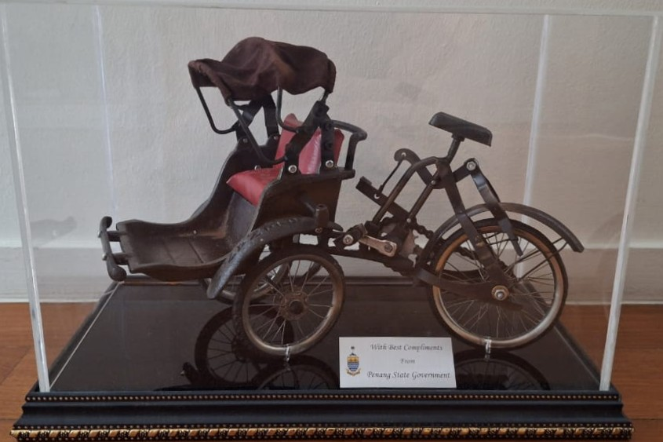
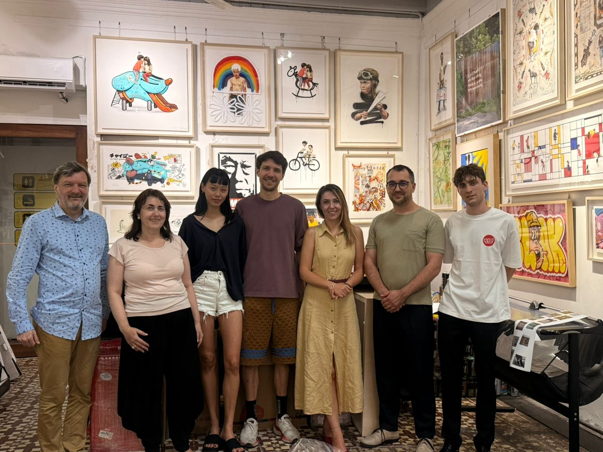
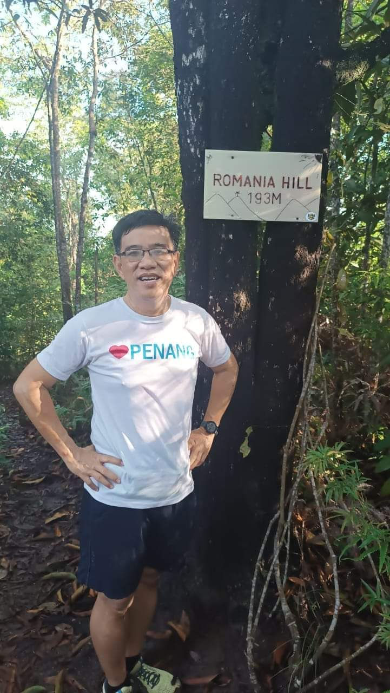
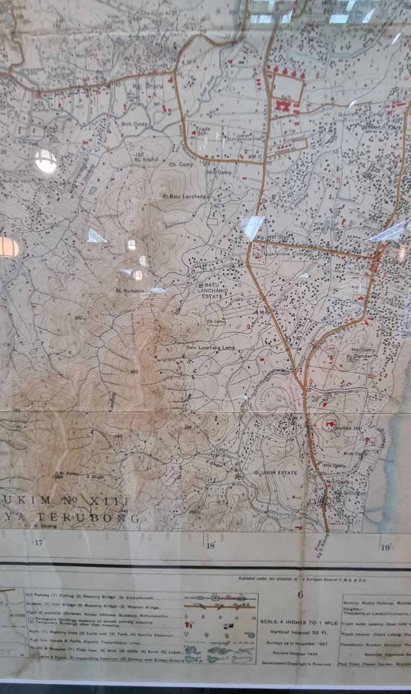

Curatorial note. This essay follows a single work — Ernest Zacharevic’s George Town mural Little Children on a Bicycle — across the threshold from a public wall into the collection, by way of a signed print, the Penang State Government’s answering gift, an afternoon in the artist’s studio, and the improbable fact that Penang Island carries Romania’s name on one of its own hills. Presented bilingually; use the language selector above for the Romanian edition.Notă curatorială. Acest eseu urmărește o singură lucrare — murala Micii copii pe bicicletă a lui Ernest Zacharevic din George Town — trecând pragul de la un zid public în colecție, prin intermediul unei tipărituri semnate, al darului de răspuns al Guvernului Statului Penang, al unei după-amiezi în atelierul artistului și al faptului neverosimil că Insula Penang poartă numele României pe unul dintre propriile-i dealuri. Prezentat bilingv; folosiți selectorul de limbă de mai sus pentru ediția în română.
Curatorial prefacePreambul curatorial
Most of the objects in this collection were made to last: carved in sacred hardwood, cast, incised, meant to survive their makers. This one was made to disappear. Little Children on a Bicycle was painted onto a crumbling lime-plaster wall in the tropics, where damp, sun, mould, and the slow breathing of an old city were always going to take it back. That it entered a private collection at all is the whole story — because what the collection holds is not the wall. It is the portable memory of the wall: a signed, hand-numbered print that let an image born on Armenian Street in Penang ride, like the two children it depicts, all the way to a wall in Canberra and into the Romanian side of this archive.
Cele mai multe obiecte din această colecție au fost făcute să dăinuie: cioplite în lemn sacru, turnate, incizate, menite să-și supraviețuiască făuritorilor. Acesta a fost făcut să dispară. Micii copii pe bicicletă a fost pictat pe un zid de tencuială de var ce se fărâmița, la tropice, unde umezeala, soarele, mucegaiul și respirația lentă a unui oraș vechi aveau oricum să-l ia înapoi. Faptul că a intrat vreodată într-o colecție privată este întreaga poveste — fiindcă ceea ce păstrează colecția nu este zidul. Este memoria portabilă a zidului: o tipăritură semnată și numerotată de mână care a îngăduit unei imagini născute pe Armenian Street, în Penang, să călătorească — asemenea celor doi copii pe care îi înfățișează — tocmai până la un perete din Canberra și în partea românească a acestei arhive.
PacificaRomania reads its objects as things that cross thresholds — from tool to trade good to philosophical form, from artifact to living idea. A street mural is already halfway across that threshold before a collector ever arrives. It is art that refuses the museum, that belongs to the pavement and the passer-by, that ages in public. The print is the moment it learns to travel. This essay follows that crossing all the way — the mural, the man who made it, the print in the collection, the state's answering gift, an afternoon in the artist's studio, and the improbable fact that Penang Island carries Romania's name on one of its own hills.
PacificaRomania își citește obiectele ca pe niște lucruri care trec praguri — de la unealtă la marfă și apoi la formă filosofică, de la artefact la idee vie. O murală de stradă a trecut deja jumătate din acest prag înainte ca vreun colecționar să ajungă la ea. Este artă care refuză muzeul, care aparține trotuarului și trecătorului, care îmbătrânește în public. Tipăritura este clipa în care ea învață să călătorească. Acest eseu urmărește această trecere până la capăt — murala, omul care a făcut-o, tipăritura din colecție, darul de răspuns al statului, o după-amiază în atelierul artistului și faptul neverosimil că Insula Penang poartă numele României pe unul dintre propriile-i dealuri.
The mural: Little Children on a BicycleMurala: Micii copii pe bicicletă
On a weathered wall along Lebuh Armenian (Armenian Street) in the historic core of George Town, Penang — near where the street meets Gat Lebuh Armenian — two children ride a single bicycle. An older girl leans over the handlebars, chin up, steering with the total seriousness of a child in charge; behind her a smaller boy clings on, mouth open — mid-laugh or mid-wail, the ambiguity is the point. They are painted with quiet photorealism in muted greys and whites, life-sized, at a child's true height on the street, and they are modelled on real siblings from the neighbourhood — not generic figures but particular Penang children, which is why the image feels less like decoration than like a memory someone actually has.
Pe un zid scorojit de pe Lebuh Armenian (Armenian Street), în miezul istoric al orașului George Town, Penang — aproape de locul unde strada întâlnește Gat Lebuh Armenian — doi copii merg pe o singură bicicletă. O fetiță mai mare se apleacă peste ghidon, cu bărbia ridicată, conducând cu seriozitatea deplină a unui copil pus la comandă; în spatele ei, un băiețel se ține strâns, cu gura deschisă — la mijloc între râs și plâns, iar ambiguitatea este chiar miezul. Sunt pictați cu un realism liniștit, în griuri și alburi stinse, la mărime naturală, la înălțimea adevărată a unui copil pe stradă, și sunt modelați după frați adevărați din cartier — nu figuri generice, ci copii anume din Penang, motiv pentru care imaginea pare mai puțin un ornament și mai mult o amintire pe care cineva chiar o are.
And then the trick that made the work famous: the bicycle is real. A genuine, slightly rusted vintage bicycle is bolted beneath the painting, so the painted children ride an actual three-dimensional machine standing on the actual pavement. Painting and object fuse into one tableau you can walk up to, lean on, photograph yourself beside — what the artist calls interactive art, because the passer-by completes it. The wall's own decay — the map of damp stains, the flaking render, the ghost of old paint — is not a flaw he worked around but the ground he worked with. The ruin becomes the sky the children ride under.
Și apoi trucul care a făcut lucrarea celebră: bicicleta este reală. O bicicletă veche, adevărată, ușor ruginită, este fixată cu buloane sub pictură, astfel încât copiii pictați merg pe o mașinărie tridimensională reală, care stă pe trotuarul real. Pictura și obiectul se contopesc într-un singur tablou de care te poți apropia, pe care te poți sprijini, lângă care te poți fotografia — ceea ce artistul numește artă interactivă, fiindcă trecătorul o completează. Degradarea zidului însuși — harta petelor de umezeală, tencuiala care se cojește, fantoma vechii vopsele — nu este un cusur pe care l-a ocolit, ci temelia cu care a lucrat. Ruina devine cerul sub care merg copiii.
The mural was created in 2012 as one of six works Zacharevic made under the title “Mirrors George Town,” commissioned for the George Town Festival that year. By his own account the project grew from a single photograph, taken at a Sunday sketching gathering near the Goddess of Mercy (Kuan Yin) Temple. George Town's old town had been inscribed as a UNESCO World Heritage Site in 2008; Zacharevic's murals landed inside that living heritage fabric and, almost overnight, gave it a second life. Little Children on a Bicycle became the most photographed of them all — the image that turned a quiet lane into a pilgrimage and George Town into one of the street-art capitals of Southeast Asia.
Murala a fost creată în 2012, ca una dintre cele șase lucrări făcute de Zacharevic sub titlul «Mirrors George Town», comandate pentru Festivalul George Town din acel an. După propria-i mărturisire, proiectul a pornit de la o singură fotografie, făcută la o întâlnire de schițat, într-o duminică, lângă Templul Zeiței Milei (Kuan Yin). Centrul vechi al orașului fusese înscris ca Sit al Patrimoniului Mondial UNESCO în 2008; muralele lui Zacharevic au aterizat în această țesătură vie a patrimoniului și, aproape peste noapte, i-au dat o a doua viață. Micii copii pe bicicletă a devenit cea mai fotografiată dintre toate — imaginea care a transformat o alee liniștită într-un pelerinaj și George Town într-una dintre capitalele artei stradale din Asia de Sud-Est.
Because it lives outdoors, the mural is always in a slow contest with its own disappearance. It has needed care more than once — touched up in 2016 and restored again in 2025, alongside several of its siblings. That is the condition of all street art: to survive is to be repainted. It makes the collection's print all the more pointed — a fixed, dated witness to a work that the street itself keeps having to renew.
Fiindcă trăiește în aer liber, murala se află mereu într-o luptă lentă cu propria dispariție. A avut nevoie de îngrijire de mai multe ori — retușată în 2016 și restaurată din nou în 2025, alături de câțiva dintre frații ei. Aceasta este condiția oricărei arte stradale: a supraviețui înseamnă a fi repictat. Iar asta face tipăritura din colecție cu atât mai grăitoare — un martor fix, datat, al unei lucrări pe care strada însăși trebuie s-o reînnoiască mereu.
That afterlife is part of the meaning. The piece is about children and play, but its life became about seeing and being seen — a painting that generated millions of other images, a wall that made everyone who stood before it into a co-author of the photograph. Ephemeral by material, it became permanent by circulation. It is, in the collection's terms, a container of memory that leaks memory outward: everyone carries a copy.
Această viață de după este parte din sens. Lucrarea este despre copii și joacă, dar viața ei a ajuns să fie despre a vedea și a fi văzut — o pictură care a generat milioane de alte imagini, un zid care a făcut din fiecare om care a stat în fața lui un co-autor al fotografiei. Efemeră ca material, a devenit permanentă prin circulație. Este, în termenii colecției, un recipient al memoriei care lasă memoria să curgă în afară: fiecare poartă cu sine o copie.
Watch — making the mural (film & timelapse)Vizionează — facerea muralei (film și timelapse)
The artist: Ernest ZacharevicArtistul: Ernest Zacharevic
Ernest Zacharevic is a Lithuanian-born artist (born 1986), trained in the United Kingdom — in London — and long based in Penang. It was the George Town commission that made his name internationally; when the murals went viral, the BBC reached for the inevitable shorthand and called him “Malaysia's answer to Banksy.”
Ernest Zacharevic este un artist născut în Lituania (n. 1986), format în Regatul Unit — la Londra — și de multă vreme stabilit în Penang. Comanda de la George Town i-a făcut numele cunoscut pe plan internațional; când muralele au devenit virale, BBC a recurs la formula inevitabilă și l-a numit «răspunsul Malaysiei la Banksy».
But the comparison flattens what is distinctive in his work. Zacharevic's signature is not the stencil or the slogan; it is the marriage of painted figures with real objects and real, decaying architecture. Children, animals, and everyday people are rendered with a tender, almost documentary realism and then set into dialogue with a found bicycle, a motorbike, a window grille, a chair, a wall's own wounds — holes and pipes and stains folded into the composition. The result is neither pure painting nor pure sculpture but a third thing — a staged encounter that only exists in that spot, on that surface, at that scale. He paints with a place, and with its people, rather than onto it: the George Town series used local residents as its models.
Dar comparația aplatizează ceea ce este distinctiv în opera lui. Semnătura lui Zacharevic nu este șablonul sau sloganul; este căsătoria dintre figurile pictate și obiectele reale și arhitectura reală, în degradare. Copii, animale și oameni obișnuiți sunt redați cu un realism tandru, aproape documentar, apoi puși în dialog cu o bicicletă găsită, o motocicletă, un grilaj de fereastră, un scaun, cu rănile zidului însuși — găuri, țevi și pete integrate în compoziție. Rezultatul nu este nici pictură pură, nici sculptură pură, ci un al treilea lucru — o întâlnire regizată care există doar în acel loc, pe acea suprafață, la acea scară. El pictează împreună cu un loc și cu oamenii lui, nu peste el: seria din George Town i-a folosit ca modele pe localnici.
The same year, he mounted his first solo show — Art is Rubbish, Rubbish is Art — at the Hin Bus Depot in George Town, painting on reclaimed and found materials, and helped turn that disused depot into an arts hub. His work has since travelled far beyond the street and now sits in private and institutional collections around the world, including the Dean Collection assembled by Swizz Beatz. He has also pushed his practice toward advocacy — most notably “Splash and Burn,” the art project associated with confronting palm-oil deforestation in Sumatra. He is an artist who moves between the intimate (two kids on a bike) and the planetary (burning forests), and who keeps insisting that art belongs out in the world, exposed to weather and consequence, rather than sealed behind glass.
În același an, și-a deschis prima expoziție personală — Art is Rubbish, Rubbish is Art — la Hin Bus Depot din George Town, pictând pe materiale recuperate și găsite, și a contribuit la transformarea acelei foste remize în centru cultural. De atunci, opera sa a călătorit mult dincolo de stradă și se află acum în colecții private și instituționale din întreaga lume, între care colecția Dean, adunată de Swizz Beatz. Și-a împins de asemenea practica spre activism — mai ales prin «Splash and Burn», proiectul de artă asociat cu confruntarea despăduririi provocate de uleiul de palmier în Sumatra. Este un artist care se mișcă între intim (doi copii pe o bicicletă) și planetar (păduri în flăcări) și care insistă mereu că arta aparține lumii de afară, expusă vremii și consecințelor, nu ferecată în spatele sticlei.
There is a quieter reason he belongs in this collection. PacificaRomania is built on convergence — the meeting of a European sensibility with the Pacific and Southeast Asian world, of Romania with the ocean-facing cultures on the far side of the earth. Zacharevic is himself a convergence figure: a Baltic-born European whose defining work is inseparable from a Malaysian heritage city. His art is what happens when Northern European training meets a tropical wall in a Straits port town. That is the collection's own thesis, made by someone else, in paint.
Există un motiv mai tăcut pentru care el aparține acestei colecții. PacificaRomania este clădită pe convergență — întâlnirea unei sensibilități europene cu lumea Pacificului și a Asiei de Sud-Est, a României cu culturile cu fața spre ocean de pe cealaltă parte a pământului. Zacharevic este el însuși o figură a convergenței: un european născut în Baltica, a cărui operă definitorie este de nedespărțit de un oraș-patrimoniu malaysian. Arta lui este ceea ce se întâmplă când formația nord-europeană întâlnește un zid tropical într-un oraș-port din Strâmtori. Aceasta este chiar teza colecției, făcută de altcineva, în pictură.
The print in the collectionTipăritura din colecție
The work held here is a signed, hand-numbered limited-edition print of Little Children on a Bicycle — the mural photographed and reproduced so the fused image of painted children and real bicycle survives as a single flat picture, complete with the vine cascading down the left edge, the tap and pipework at lower right, and the yellow road line that grounds the whole scene in its actual street.
Lucrarea păstrată aici este o tipăritură în ediție limitată, semnată și numerotată de mână, a Micilor copii pe bicicletă — murala fotografiată și reprodusă astfel încât imaginea contopită a copiilor pictați și a bicicletei reale să supraviețuiască într-o singură imagine plană, cu tot cu vița care cade pe marginea din stânga, robinetul și țevile din dreapta jos și linia galbenă a drumului care ancorează întreaga scenă în strada ei adevărată.
Two marks make it a collection object rather than a poster. In the lower left, in pencil, is the edition number — 256 / 4500 (read from the print; the exact digits are worth confirming on the sheet), placing it within a defined, finite edition. In the lower right is the artist's signature — the compact “Zach” hand that appears on his works. Between them they turn a reproduction into an authorized, authored thing: not merely a picture of the mural but an object the artist has touched and released into the world under his name.
Două semne o fac obiect de colecție, nu afiș. În stânga jos, în creion, se află numărul ediției — 256 / 4500 (citit de pe tipăritură; cifrele exacte merită confirmate pe coală), plasând-o într-o ediție definită, finită. În dreapta jos se află semnătura artistului — mâna compactă «Zach» care apare pe lucrările sale. Împreună, ele transformă o reproducere într-un lucru autorizat și asumat: nu doar o imagine a muralei, ci un obiect pe care artistul l-a atins și l-a dat lumii sub numele său.
Why it belongs here is precisely its condition of being a print. The mural cannot be collected — it is mortar and a bolted bicycle on a public lane, repainted whenever the weather wins, and it will one day be gone for good. The print is the mechanism by which an un-collectable, perishable, place-bound work becomes portable, durable, and personal without pretending to be the original. It is honest about being a copy, and in that honesty it does something the original never could: it leaves George Town. It crosses oceans. It hangs in a home in the Southern Hemisphere and in the Romanian imagination of this archive. The children who ride nowhere, forever, on a wall in Penang, have — through the print — actually travelled.
De ce aparține aici ține tocmai de condiția ei de tipăritură. Murala nu poate fi colecționată — este mortar și o bicicletă înșurubată pe o alee publică, repictată ori de câte ori învinge vremea, și într-o zi se va duce de tot. Tipăritura este mecanismul prin care o lucrare imposibil de colecționat, perisabilă, legată de loc, devine portabilă, durabilă și personală, fără a se preface că este originalul. Este cinstită în privința faptului că este o copie, iar în această cinste face ceva ce originalul nu ar fi putut niciodată: părăsește George Town. Traversează oceane. Atârnă pe un perete din Emisfera Sudică și în imaginația românească a acestei arhive. Copiii care nu merg nicăieri, în veci, pe un zid din Penang, au — prin tipăritură — călătorit cu adevărat.
The state's gift: a trishaw under glassDarul statului: un trishaw sub sticlă
There is a second object in the display, and it changes the register of the whole piece from acquisition to recognition. Set on the floor directly in front of the framed print, inside a clear acrylic case, stands a bronze-finished model of a Penang trishaw — the beca, the three-wheeled cycle-rickshaw that is George Town's most emblematic street vehicle, complete with its passenger seat, folded hood, and red cushion. A small plaque on the base carries a crest and the words “With best compliments — from the Penang State Government.” (Plaque wording read from the photograph; confirm the exact text and the occasion.)
Există un al doilea obiect în expunere, iar el schimbă registrul întregii piese, de la achiziție la recunoaștere. Așezat pe podea, chiar în fața tipăriturii înrămate, într-o casetă de acril transparentă, stă un model cu finisaj de bronz al unui trishaw din Penang — beca, tricicleta-ricșă cu trei roți care este cel mai emblematic vehicul de stradă din George Town, cu tot cu scaunul de pasager, coviltirul strâns și perna roșie. O plăcuță pe soclu poartă un blazon și cuvintele «With best compliments — from the Penang State Government» («Cu cele mai bune urări — din partea Guvernului Statului Penang»). (Text citit de pe fotografie; de confirmat formularea exactă și ocazia.)
An official gift is a different kind of provenance. It says this print did not merely change hands in a market; it was acknowledged at the level of the state — the same state whose tourism the mural helped transform. And the choice of object is exact to the point of wit. The mural depicts a bicycle; the state answers with a trishaw — the very vehicle that carries visitors down the narrow lanes to stand before the mural. In one vitrine, two humble wheeled machines are stacked: the painted bicycle above that goes nowhere forever, and the gifted trishaw below that has ferried a city's worth of tourists to see it. Both are vehicles for carrying people; both, now, are vehicles for carrying memory. The gift completes a circle the mural began — art that moved a city, honoured by the city with a model of the machine that moves through it.
Un dar oficial este un alt fel de proveniență. Spune că această tipăritură nu a schimbat pur și simplu mâinile pe o piață; a fost recunoscută la nivelul statului — chiar statul al cărui turism murala a contribuit să-l transforme. Iar alegerea obiectului este exactă până la spirit. Murala înfățișează o bicicletă; statul răspunde cu un trishaw — chiar vehiculul care duce vizitatorii pe aleile înguste ca să stea în fața muralei. Într-o singură vitrină sunt așezate două mașinării umile pe roți: bicicleta pictată de deasupra, care nu merge nicăieri în veci, și trishaw-ul dăruit de dedesubt, care a purtat cât un oraș întreg de turiști ca să o vadă. Amândouă sunt vehicule pentru a purta oameni; amândouă, acum, sunt vehicule pentru a purta memorie. Darul încheie un cerc pe care murala l-a început — artă care a mișcat un oraș, cinstită de oraș cu un model al mașinăriei care se mișcă prin el.

A visit to the studio, George TownO vizită la atelier, George Town
The collection's relationship to this work is not only the objects on the wall. It includes an afternoon spent in Zacharevic's studio in George Town, and the particular grace of meeting an artist among his own work.
Legătura colecției cu această lucrare nu se rezumă la obiectele de pe perete. Ea cuprinde o după-amiază petrecută în atelierul lui Zacharevic din George Town și harul aparte de a întâlni un artist în mijlocul propriei opere.
The room is the opposite of a white-cube gallery. Framed works climb the walls salon-style, edge to edge and floor to ceiling — the bicycle image among them, alongside a bright figure with a rainbow, a child on a rocking horse, a small aviator, a Mondrian-inflected panel, graffiti-loud pieces in the periphery. Prints and proofs lean in stacks; the tiled floor and the working clutter say this is a place where things are made and editioned, not merely sold. To stand inside it is to see the murals' quieter siblings — the studio life behind the public spectacle on the streets outside.
Încăperea este opusul unei galerii de tip cub-alb. Lucrări înrămate urcă pe pereți în stil-salon, cap la cap, de la podea la tavan — imaginea cu bicicleta printre ele, alături de o figură vie cu un curcubeu, un copil pe un cal-balansoar, un mic aviator, un panou de inspirație Mondrian, piese gălăgioase de graffiti la margini. Tipărituri și probe stau rezemate în teancuri; podeaua cu dale și dezordinea de lucru spun că acesta este un loc unde lucrurile se fac și se editează, nu doar se vând. A sta înăuntru înseamnă a vedea frații mai tăcuți ai muralelor — viața de atelier din spatele spectacolului public de pe străzile de afară.
To honour the collection's rule of not naming people it cannot verify, the individuals in the visit photograph are left uncaptioned. What the record holds is that the family visited the studio and met the artist and his spouse — the human encounter that sits underneath the object. It is the part of provenance that never appears on the pencil-numbered sheet and yet matters most: that this print did not come through an auction house or a resale platform, but through being there, in the artist's own room, in the city where the wall still stands a few streets away. Provenance, at its best, is a memory of a meeting. This one has one.
Pentru a onora regula colecției de a nu numi oameni pe care nu îi poate verifica, persoanele din fotografia vizitei rămân neetichetate. Ceea ce păstrează consemnarea este că familia a vizitat atelierul și l-a întâlnit pe artist și pe soția sa — întâlnirea omenească ce stă la temelia obiectului. Este partea de proveniență care nu apare niciodată pe coala numerotată în creion și care totuși contează cel mai mult: că această tipăritură nu a venit printr-o casă de licitații sau o platformă de revânzare, ci prin a fi acolo, în chiar încăperea artistului, în orașul unde zidul încă stă la câteva străzi depărtare. Proveniența, în cel mai bun caz al ei, este amintirea unei întâlniri. Aceasta are una.

Romania on the hill: Bukit Romania and the 1927 mapRomânia pe deal: Bukit Romania și harta din 1927
And now the essay can make the turn that only this collection could make — from a Lithuanian's mural in a Malaysian city to the strangest convergence of all, one that needs no metaphor because it is printed on the land itself.
Și acum eseul poate face cotitura pe care numai această colecție o poate face — de la murala unui lituanian într-un oraș malaysian, la cea mai stranie convergență dintre toate, una care nu are nevoie de metaforă, fiindcă este tipărită pe pământul însuși.
On Penang Island, in the green ridge country above the Greenlane and Gelugor districts — the area trail-walkers call Green Land Heights — rises a cluster of small forested hills that hikers string together in a single circuit: Bukit Hijau (locals also call it Fish Head Hill), Bukit Batu Lanchang, Bukit Delima, Bukit Gambir, Cow Hill — and, among them, Bukit Romania, “Romania Hill.” Peak registers put its summit at around 176 metres; the hand-lettered sign nailed to the tree at the top declares 193 metres and the plain English name, ROMANIA HILL. The usual approach climbs from the Cangkat Tembaga trailhead along the marked FTAC “Orange” route, and the ridge line runs some nine kilometres toward Bukit Jambul in the centre of the island. The collection's record includes a photograph taken at that summit sign — by the account here, the Penang state Tourism Minister (named by role), in an “I ♥ Penang” shirt, standing beside the tree that says ROMANIA HILL.
Pe Insula Penang, în ținutul de creste verzi de deasupra cartierelor Greenlane și Gelugor — zona pe care drumeții o numesc Green Land Heights — se înalță un pâlc de dealuri mici, împădurite, pe care hoinarii le înșiră într-un singur circuit: Bukit Hijau (localnicii îi mai spun și Fish Head Hill, «Dealul Cap-de-Pește»), Bukit Batu Lanchang, Bukit Delima, Bukit Gambir, Cow Hill — și, între ele, Bukit Romania, «Dealul României». Registrele de vârfuri îi dau înălțimea de aproximativ 176 de metri; plăcuța scrisă de mână, bătută în cuie în copacul din vârf, anunță 193 de metri și numele simplu, în engleză, ROMANIA HILL. Urcușul obișnuit pornește de la capătul de traseu Cangkat Tembaga, pe ruta marcată FTAC «Orange», iar linia crestei se întinde vreo nouă kilometri către Bukit Jambul, în centrul insulei. Consemnarea colecției include o fotografie făcută la acea plăcuță de vârf — după relatarea de aici, Ministrul Turismului al Statului Penang (numit prin funcție), într-un tricou «I ♥ Penang», stând lângă copacul pe care scrie ROMANIA HILL.
For an archive whose entire premise is the convergence of Romania with the ocean-facing world, this is almost too much. Everywhere else in this collection, the link is argued — through form, through myth, through the shared shapes that separate cultures arrive at on their own. Here it is simply there, surveyed onto a Straits island: a Balkan kingdom's name resting on a tropical hill, reachable on foot, photographed by the minister whose portfolio is the very tourism that Zacharevic's wall ignited a few kilometres away in the old town. The mural made George Town's streets into a map that visitors read with their feet. Bukit Romania reveals that the island's hills had already, long before, been written into a map that carried Romania's name.
Pentru o arhivă a cărei întreagă premisă este convergența dintre România și lumea cu fața spre ocean, aceasta este aproape prea mult. Peste tot în această colecție, legătura este argumentată — prin formă, prin mit, prin formele comune la care culturi separate ajung pe cont propriu. Aici ea este pur și simplu acolo, măsurată topografic pe o insulă din Strâmtori: numele unui regat balcanic odihnindu-se pe un deal tropical, accesibil pe jos, fotografiat de ministrul al cărui portofoliu este chiar turismul pe care zidul lui Zacharevic l-a aprins la câțiva kilometri depărtare, în orașul vechi. Murala a făcut din străzile din George Town o hartă pe care vizitatorii o citesc cu picioarele. Bukit Romania dezvăluie că dealurile insulei fuseseră deja, cu mult înainte, scrise pe o hartă care purta numele României.
And here is the discovery this essay can report. The name's origin is undocumented. A deliberate search of the public record — hiking maps, trail apps, peak registers, colonial street-name studies, local histories — turns up the hill everywhere as a place and nowhere as a name: no gazetteer, no heritage source, no toponymic study accounts for why a Penang ridge should be called Romania. That silence is itself the point. Penang's colonial names are, as a rule, well explained — Strawberry Hill for the fruit Francis Light tried to grow there; Bukit Bendera / “Flagstaff Hill” for the signal flag; streets named for governors and English towns — and yet Bukit Romania has slipped clean through the documented record. This is exactly the kind of name that survives only where it was first written down: on a survey sheet. Which is why the 1927 British survey map of Penang Island in the collection's keeping is not a footnote but, quite possibly, the primary source — the earliest, perhaps the only, record of how the name reached the ridge. As the collection transcribes the sheet — its surveyor, the adjacent lots and estates, whatever caption carries the word “Romania” — this account is set to become the first published record of how a Straits hill came to wear a Balkan name.
Și iată descoperirea pe care acest eseu o poate consemna. Originea numelui este nedocumentată. O căutare deliberată a înregistrării publice — hărți de drumeție, aplicații de trasee, registre de vârfuri, studii ale numelor de străzi coloniale, istorii locale — găsește dealul pretutindeni ca loc și nicăieri ca nume: niciun dicționar geografic, nicio sursă de patrimoniu, niciun studiu toponimic nu explică de ce o creastă din Penang ar purta numele României. Această tăcere este chiar miezul. Numele coloniale ale Penangului sunt, de regulă, bine explicate — Strawberry Hill, după căpșunele pe care Francis Light a încercat să le crească acolo; Bukit Bendera / «Flagstaff Hill», după steagul de semnalizare; străzi numite după guvernatori și orașe englezești — și totuși Bukit Romania a alunecat printre ochiurile înregistrării documentate. Acesta este exact genul de nume care supraviețuiește doar acolo unde a fost întâi scris: pe o coală de cadastru. Iată de ce harta topografică britanică a Insulei Penang din 1927, aflată în păstrarea colecției, nu este o notă de subsol, ci, foarte probabil, sursa primară — cea mai timpurie, poate singura, consemnare a felului în care numele a ajuns pe creastă. Pe măsură ce colecția transcrie foaia — inspectorul, loturile cadastrale și moșiile învecinate, orice legendă care poartă cuvântul «Romania» —, această relatare este menită să devină prima consemnare publicată a felului în care un deal din Strâmtori a ajuns să poarte un nume balcanic.
Whatever that story proves to be, its place in the essay is already earned. The whole collection asks the same question of every object: does the connection between Romania and this far ocean have to be invented, or is it discovered? Little Children on a Bicycle answers it one way — through a European artist's convergence with a Malaysian wall, and a print that carried the wall home. Bukit Romania answers it the other way, and more literally than any object could: the connection was drawn onto a map of Penang, and it is still standing on the ridge, waiting under a hand-painted sign for someone from the collection to climb up and read its name back to it.
Oricare ar fi acea poveste, locul ei în eseu este deja câștigat. Întreaga colecție pune fiecărui obiect aceeași întrebare: legătura dintre România și acest ocean îndepărtat trebuie inventată sau este descoperită? Micii copii pe bicicletă răspunde într-un fel — prin convergența unui artist european cu un zid malaysian și o tipăritură care a dus zidul acasă. Bukit Romania răspunde în celălalt fel, și mai literal decât ar putea-o face orice obiect: legătura a fost desenată pe o hartă a Penangului și stă încă pe creastă, așteptând sub o plăcuță scrisă de mână ca cineva din colecție să urce și să-i citească numele înapoi.


A reading: the vehicle as migrationO lectură: vehiculul ca migrație
Every object in this collection is asked the same question: what does it think about? This one thinks about movement — and, like the collection's other anchors, about departure and return.
Fiecărui obiect din această colecție i se pune aceeași întrebare: la ce se gândește? Acesta se gândește la mișcare — și, ca și celelalte piese-ancoră ale colecției, la plecare și întoarcere.
A bicycle is the humblest migration machine: it carries children a little further from home than they are supposed to go, and brings them back by dinner. A trishaw is its city cousin, a machine for carrying strangers into a place and out again. Zacharevic freezes the bicycle at the instant of pure momentum — leaning, laughing, slightly out of control — the exact feeling of a journey just begun; the state's gift sets a trishaw, the vehicle of arrival, beneath it. Both machines are still, and yet the entire tableau is about going somewhere. That paradox is the same one the collection keeps meeting: the boomerang that flies away and completes the circle; the sea-road drawn in the air; the object that stays put while its meaning travels the world.
O bicicletă este cea mai umilă mașinărie de migrație: duce copiii ceva mai departe de casă decât ar trebui și îi aduce înapoi până la cină. Un trishaw este vărul ei de oraș, o mașinărie pentru a purta străini într-un loc și înapoi afară. Zacharevic îngheață bicicleta în clipa impulsului pur — aplecată, râzând, ușor scăpată de sub control — chiar senzația unei călătorii abia începute; darul statului așază dedesubt un trishaw, vehiculul sosirii. Ambele mașinării sunt neclintite, și totuși întregul tablou este despre a merge undeva. Acest paradox este același pe care colecția îl întâlnește mereu: bumerangul care zboară și încheie cercul; drumul-mării desenat în aer; obiectul care rămâne pe loc în timp ce sensul lui străbate lumea.
And then the print performs the paradox literally. An image of children going nowhere becomes the one work in this collection that has actually crossed the ocean — from a Straits port in Southeast Asia to the Antipodes and into a Romanian archive. The wall could not move; the memory of it could. This is migration as cosmology in its gentlest key: not the epic canoe voyage of Austronesian settlement, but a rusted bicycle on a peeling wall and a hill that wears a foreign name, teaching the same lesson — that leaving and arriving are one motion, and that the things and names we make outlive the places that hold them only if we let them travel as memory.
Și apoi tipăritura pune paradoxul în act, la propriu. O imagine cu copii care nu merg nicăieri devine singura lucrare din această colecție care a traversat cu adevărat oceanul — de la un port din Strâmtori, în Asia de Sud-Est, până la Antipozi și în arhiva românească. Zidul nu s-a putut mișca; memoria lui, da. Aceasta este migrația ca cosmologie în cheia ei cea mai blândă: nu voiajul epic cu piroga al colonizării austroneziene, ci o bicicletă ruginită pe un zid scorojit și un deal care poartă un nume străin, propovăduind aceeași lecție — că plecarea și sosirea sunt o singură mișcare și că lucrurile și numele pe care le facem supraviețuiesc locurilor ce le țin numai dacă le lăsăm să călătorească precum memoria.
Attribution & corrections noteNotă de atribuire și corecturi
- Artist's nationality — corrected. An earlier draft described Zacharevic as Latvian; public sources (Wikipedia and multiple Penang art references) consistently record him as Lithuanian-born, 1986, London-trained, Penang-based.
- Mural facts — verified against public sources: created 2012; one of six murals in “Mirrors George Town” for the George Town Festival; on Armenian Street; a real vintage bicycle bolted beneath; children modelled on local siblings; touched up 2016 and restored 2025.
- Bukit Romania — verified as a place, unresolved as a name. The hill and the Bukit Hijau–Bukit Batu Lanchang–Bukit Romania circuit are well attested. Elevation: peak registers list ~176 m, while the summit sign reads 193 m — noted, not reconciled. The name's origin and the 1927 map are undocumented in any public source found; the collection's 1927 survey map is treated as the likely primary source and is being transcribed.
- Objects & people: the trishaw gift is described from the photograph (confirm plaque wording and occasion); the print edition is read as 256 / 4500 (confirm the digits); people are named by role only (the artist's spouse; the Penang state Tourism Minister).
- Naționalitatea artistului — corectată. O versiune anterioară îl descria pe Zacharevic drept leton; sursele publice (Wikipedia și mai multe referințe despre arta din Penang) îl consemnează constant ca născut în Lituania, 1986, format la Londra, stabilit în Penang.
- Datele muralei — verificate după surse publice: creată în 2012; una dintre cele șase murale din «Mirrors George Town» pentru Festivalul George Town; pe Armenian Street; o bicicletă veche reală fixată dedesubt; copiii modelați după frați din cartier; retușată în 2016 și restaurată în 2025.
- Bukit Romania — verificat ca loc, nelămurit ca nume. Dealul și circuitul Bukit Hijau–Bukit Batu Lanchang–Bukit Romania sunt bine atestate. Altitudine: registrele de vârfuri indică ~176 m, în timp ce plăcuța din vârf arată 193 m — semnalat, nereconciliat. Originea numelui și harta din 1927 sunt nedocumentate în orice sursă publică găsită; harta topografică din 1927 a colecției este tratată drept sursa primară probabilă și este în curs de transcriere.
- Obiecte și persoane: darul-trishaw este descris de pe fotografie (de confirmat textul plăcuței și ocazia); ediția tipăriturii este citită ca 256 / 4500 (de confirmat cifrele); persoanele sunt numite doar prin funcție (soția artistului; Ministrul Turismului al Statului Penang).
ReferencesBibliografie
- Ernest Zacharevic — Wikipedia. source ↗
- Little Children on a Bicycle Mural — Pipeaway. source ↗
- Ernest Zacharevic Murals in Penang — Penang Travel Tips. source ↗
- Penang street art and murals by Ernest Zacharevic — BA Street Art. source ↗
- George Town Street Art Guide (children modelled on real siblings). source ↗
- Dose 19: George Town’s Little Children on a Bicycle — Daily Dose of Art. source ↗
- Ernest Zacharevic — film. source ↗
- Bukit Hijau – Bukit Romania — AllTrails. source ↗
- Green Land Heights trails — Wikiloc. source ↗
- Bukit Romania (176 m) — Peakery. source ↗
- The Ultimate Guide to Bukit Hijau — Penang Insider. source ↗
- British survey map of Penang Island, 1927 — collection’s own; likely primary source for the toponym.